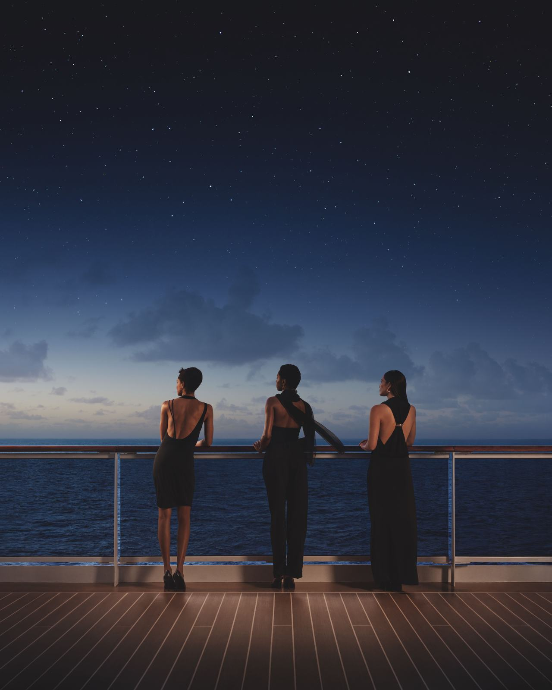
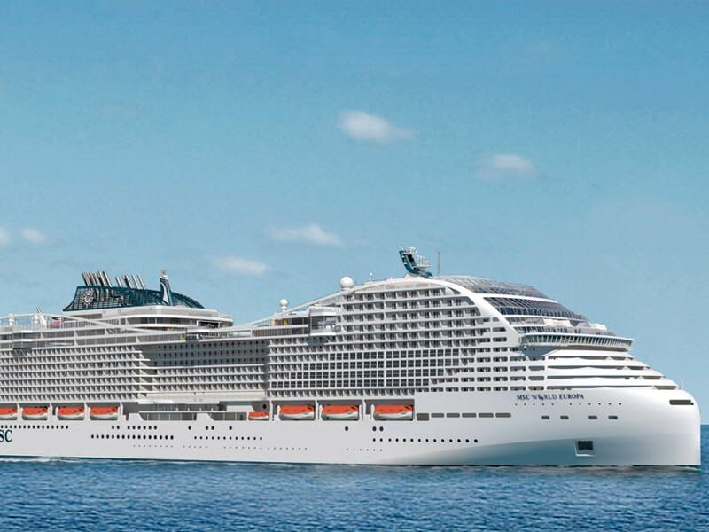
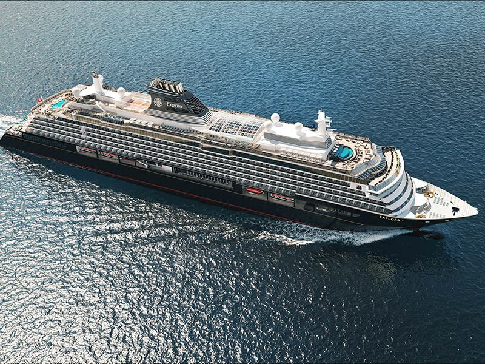
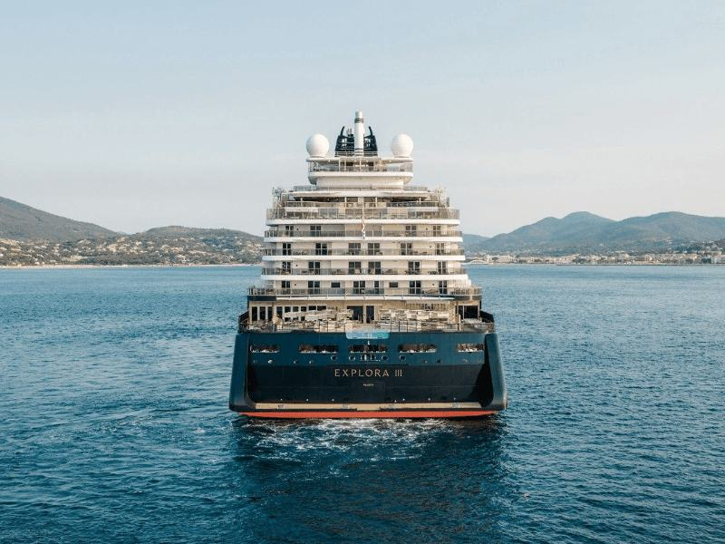
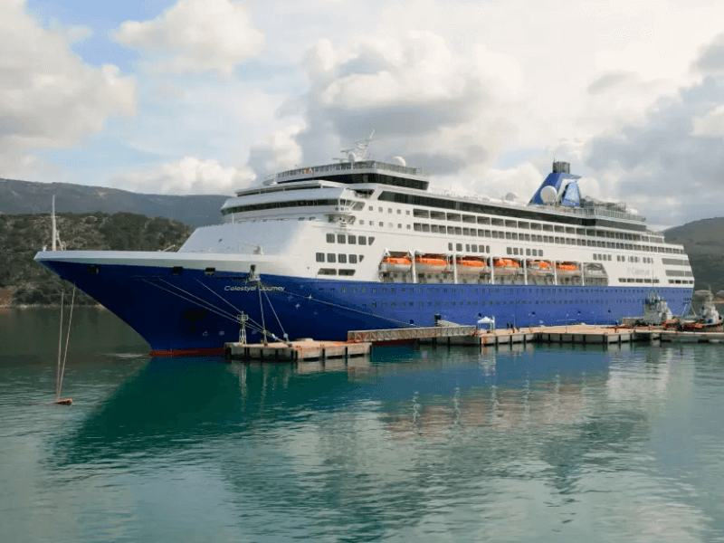
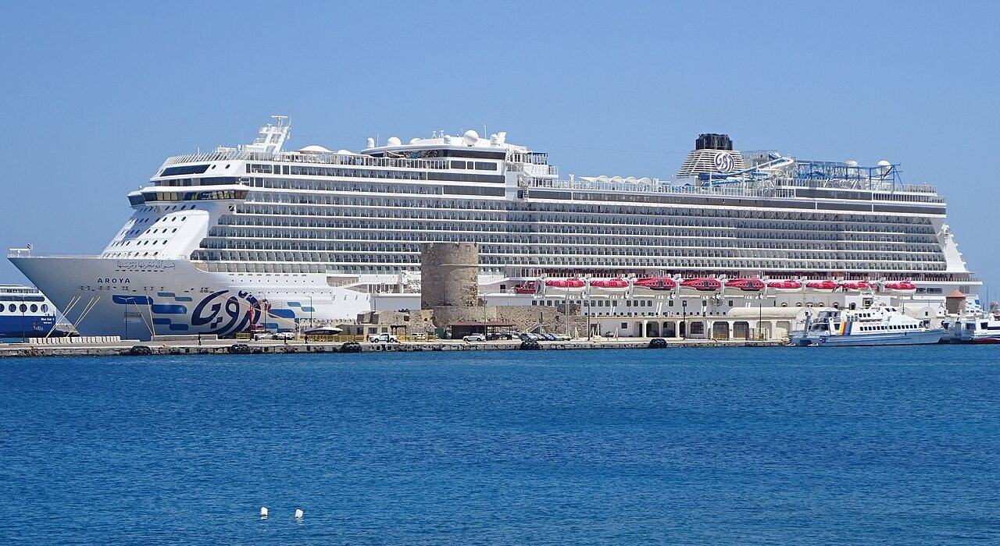
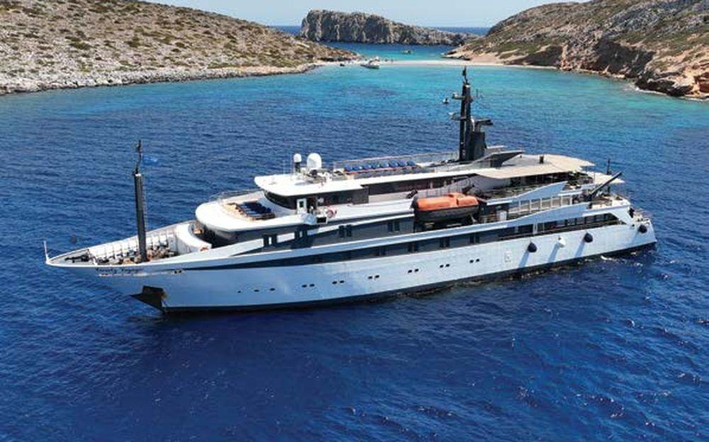
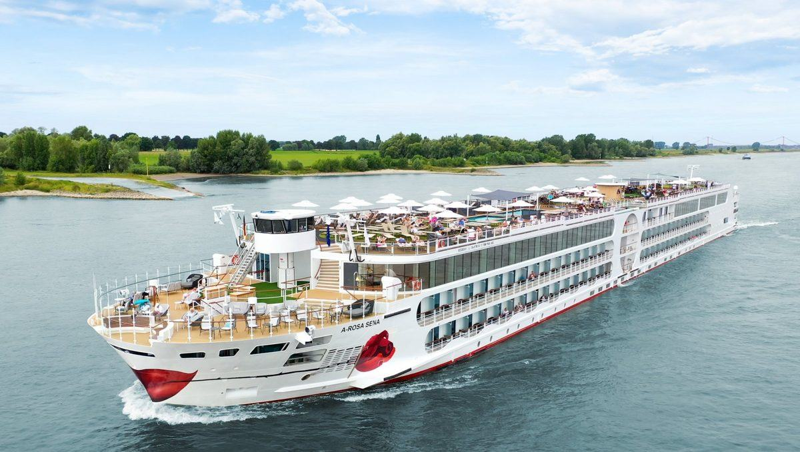
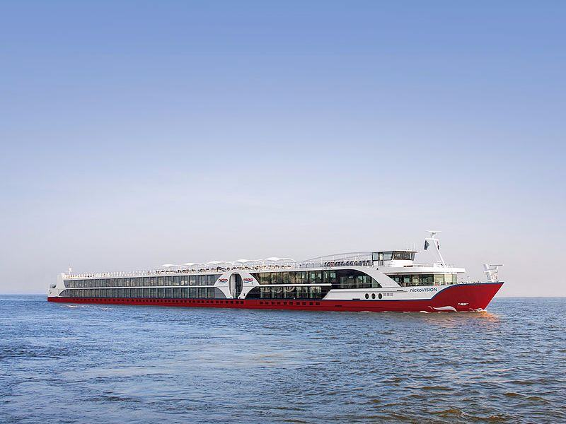
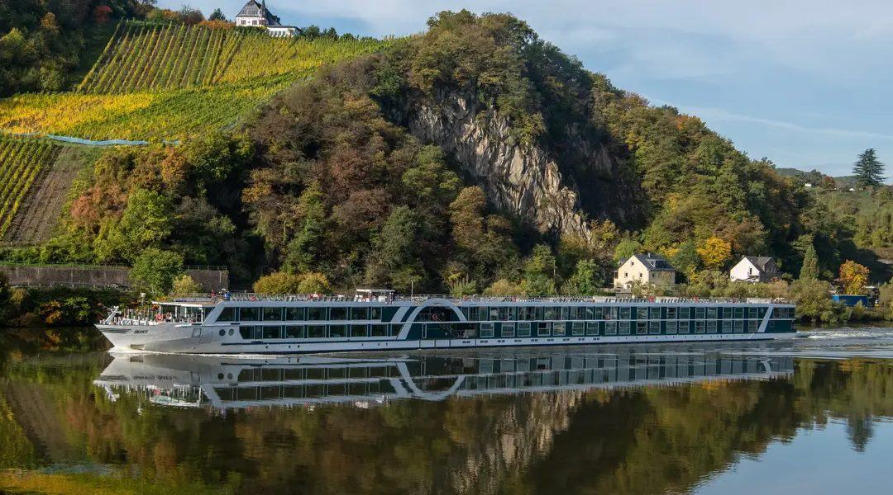

Explora Journeys
MSC's luxury line, launched 2023. Suites only, most restaurants and drinks included, no announcements. The best current answer to "I want a ship that feels like a good hotel". Current Explora sailings.

Direct contracts with each line. If a ship that suits you isn't on this list, we say so and point you elsewhere rather than sell you something else.
All-suite ocean ships, yachts of 50 to 72 guests, and river ships with a butler on every deck. Their current sailings.
MSC's luxury line, launched 2023. Suites only, most restaurants and drinks included, no announcements. The best current answer to "I want a ship that feels like a good hotel". Current Explora sailings.
Monaco-based, all-suite ships with a butler for every suite, and an expedition fleet for the polar regions and the Galápagos. Small enough to use the harbours big ships cannot. Current Silversea sailings, with fares from the line.
Athens-based yachts and motor sailers of 40 to 70 guests. Small ports, swim stops, a crew you know by name. Cabins are compact; nobody spends time in them anyway. Current Variety sailings.
Luxury river cruising on the Danube, Rhine, Moselle, Seine, Rhône and Douro, with drinks, excursions and a butler for every suite in the fare. The same company runs the Scenic Eclipse ocean yachts, from the Mediterranean to Antarctica. Scenic river sailings.
Their Mediterranean sailings are on the site now; other regions follow.
Small all-suite ships with a marina at the stern for swimming and water sports; the fare includes drinks and gratuities. Mediterranean sailings.
All-suite ships whose fare includes shore excursions, drinks and gratuities, and on most sailings the flights. Mediterranean sailings.
French small ships and expedition yachts, from the Greek islands to the polar regions. Mediterranean sailings.
Two 112-guest yachts that stay late in port and anchor off beaches the big ships pass by. Mediterranean sailings.
Tall ships under real sail, with a small number of cabins and the sails set by hand. Mediterranean sailings.
Four-masted clipper ships for the Greek, Turkish and Italian coasts, relaxed and outdoors. Mediterranean sailings.
Larger ships and river lines we book on request.
Greek line, mid-size ships, itineraries built around long port days in the Aegean. Three-, four- and seven-night loops from Athens. Greek ports mean Schengen; we say it plainly.
Saudi Arabia's first cruise line, sailing since 2024. Winter in the Red Sea from Jeddah, summer in the eastern Mediterranean from Turkish ports. Alcohol-free, family-focused, well organised.
Geneva-based, Italian at heart, the world's largest privately held cruise company. Best for families and anyone who wants a big ship at a fair price. Watch the extras: drinks, Wi‑Fi and service charge add up. We quote the all-in figure.
German river line, Rhine and Danube plus Rhône and Seine. The only river line with proper family cabins and a children's programme on some boats. All-inclusive drinks in the "Premium" fare.
Stuttgart-based, river and small-ship expedition cruises. Quiet, well-fed, German-language on board with English available. Douro and Rhine are the strong programmes.
Lüftner family, Vienna. Classic Danube itineraries from Passau, plus Rhine, Seine and the Dutch waterways at tulip time. The boats are elegant without trying to be hotels.
Every entry carries a note from someone on our team who has been on board. Guest counts are double occupancy.

MSC Cruises. 215,863 gross tons and a city block long, in service since 2022. Our note: book the Yacht Club if you can, and the aft-facing balconies on deck 10 if you can't.

Explora Journeys. All ocean-facing suites, no children's clubs, no buffet queue. Our note: the fare looks high until you add up what MSC charges extra.

Explora Journeys. The third ship, LNG-powered, sailing since 2026. Same all-suite layout as her sisters. Our note: new enough that the crew is still showing off, which is the best time to sail any ship.

Celestyal. Mid-size, Greek-run, in port more than at sea. Our note: the three-night Iconic Aegean is the best first cruise in Europe.

AROYA Cruises. Saudi flag, alcohol-free, family-heavy, very well run. Our note: the Red Sea winter loops are the warm-water option nobody in Europe knows about yet.

Variety Cruises. A motor yacht and a motor sailer. Our note: cabins are small, the swimming platform is the whole point.

A-ROSA. Sena has the family cabins and a kids' club; the older boats are quieter. Our note: Sena on the Rhine at Easter, with children, is a very easy week.

nicko cruises. German-run, understated, good kitchens. Our note: the Douro programme is the one to look at.

Amadeus River Cruises. Family-owned in Vienna. Silver by AMADEUS sailed as Amadeus Silver III until the line renamed her. Our note: the classic Danube from Passau, done with the least fuss.